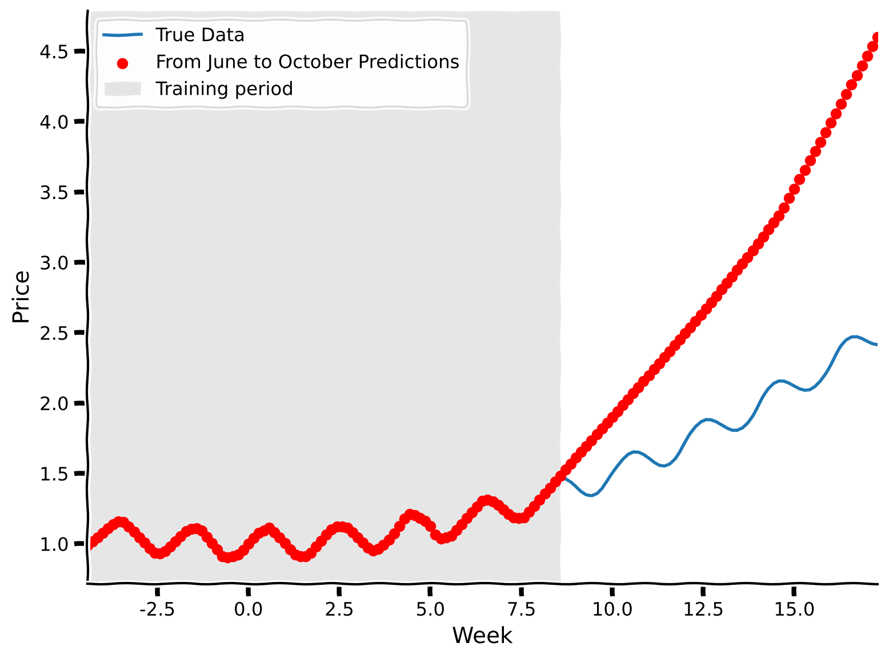

Tutorial 1: The problem of changing data distributions#
Week 2, Day 4: Macro-Learning
By Neuromatch Academy
Content creators: Hlib Solodzhuk, Ximeng Mao, Grace Lindsay
Content reviewers: Aakash Agrawal, Alish Dipani, Hossein Rezaei, Yousef Ghanbari, Mostafa Abdollahi, Hlib Solodzhuk, Ximeng Mao, Samuele Bolotta, Grace Lindsay, Alex Murphy
Production editors: Konstantine Tsafatinos, Ella Batty, Spiros Chavlis, Samuele Bolotta, Hlib Solodzhuk, Alex Murphy
Tutorial Objectives#
Estimated timing of tutorial: 30 minutes
In this tutorial, we will explore the problems that arise from distribution shifts. Distribution shifts occur when the testing data distribution deviates from the training data distribution; that is, when a model is evaluated on data that somehow differs from what it was trained on.
There are many ways that testing data can differ from training data. Two broad categories of distribution shifts are: covariate shift and concept shift. While we expect most of you to be familiar with the term concept, the term covariate is used in different ways in different fields and we want to clarify the specific usage we will be using in this tutorial. Unlike in the world of statistics, where a covariate might be a confounding variable, or specifically a continuous predictor feature, when talking about distribution shifts in machine learning, the term covariate is synonymous with any input feature (regardless of its causal status towards predicting the desired output of the model).
In covariate shift, the distribution of input features, \(P(X)\) changes. For example, consider a dog/cat classification task where the model was trained to differentiate these classes using real photos of pets, while the testing dataset represents the same dog/cat classification task, but using images of cartoon characters exclusively.
Concept shift, as its name suggests, involves a conceptual change in the relationship between features and the desired output, \(P(Y|X)\). For example, a recommendation system may learn a user’s preferences, but then those preferences change. It’s the mapping from features to outputs that is shifting, while the distribution of the inputs, \(P(X)\) remains the same.
We will explore both types of shifts using a simple function that represents the relationship between the day of the year and the price of fruits in a local market!
If you want to download the slides: https://osf.io/download/t36w8/
<__main__._NoOpWidget at 0x7f6a04ef4730>
Setup#
Install and import feedback gadget#
Show code cell source
# @title Install and import feedback gadget
!pip install vibecheck datatops --quiet
from vibecheck import DatatopsContentReviewContainer
def content_review(notebook_section: str):
return DatatopsContentReviewContainer(
"", # No text prompt
notebook_section,
{
"url": "https://pmyvdlilci.execute-api.us-east-1.amazonaws.com/klab",
"name": "neuromatch_neuroai",
"user_key": "wb2cxze8",
},
).render()
feedback_prefix = "W2D4_T1"
Imports#
Show code cell source
# @title Imports
#working with data
import numpy as np
#plotting
import matplotlib.pyplot as plt
import logging
#interactive display
import ipywidgets as widgets
#modeling
from sklearn.neural_network import MLPRegressor
from sklearn.model_selection import train_test_split
Figure settings#
Show code cell source
# @title Figure settings
logging.getLogger('matplotlib.font_manager').disabled = True
%matplotlib inline
%config InlineBackend.figure_format = 'retina' # perfrom high definition rendering for images and plots
plt.style.use("https://raw.githubusercontent.com/NeuromatchAcademy/course-content/main/nma.mplstyle")
Plotting functions#
Show code cell source
# @title Plotting functions
def predict(days, prices, summer_days_mean, summer_days_std, start_month, end_month):
"""
Predicts the prices for a given date range and plots the true and predicted prices.
Inputs:
- days (np.ndarray): input days to predict the prices on.
- prices (np.ndarray): true price values.
- summer_days_mean (float): mean value of summer days.
- summer_days_std (float): standard deviation of summer days.
- start_month (str): The starting month for the prediction range.
- end_month (str): The ending month for the prediction range.
Raises:
- ValueError: If the specified start_month is after the end_month.
"""
#check for feasibility of prompt:)
if months.index(start_month) > months.index(end_month):
raise ValueError("Please enter valid month interval.")
#find days and prices for the selected interval
selected_days = np.expand_dims(days[int(np.sum(months_durations[:months.index(start_month)])) : int(np.sum(months_durations[:months.index(end_month)+1]))], 1)
selected_prices = prices[int(np.sum(months_durations[:months.index(start_month)])) : int(np.sum(months_durations[:months.index(end_month)+1]))]
#normalize selected days
selected_days_norm = (selected_days - summer_days_mean) / summer_days_std
#evaluate MLP on normalized selected data
print(f"R-squared value is: {model.score(selected_days_norm, selected_prices):.02f}.")
#predict for selected dates
selected_prices_predictions = model.predict(selected_days_norm)
#plot true and predicted data
with plt.xkcd():
plt.plot(selected_days, selected_prices, label = "True Data")
plt.scatter(selected_days, selected_prices_predictions, label = f"From {start_month} to {end_month} Predictions", marker='o', color='r', zorder=2)
plt.xlabel('Week')
plt.ylabel('Price')
plt.axvspan(days[151], days[242], facecolor='gray', alpha=0.1, label = "Training period") #add grey background for summer days to see training data
plt.xlim(np.min(selected_days), np.max(selected_days))
plt.legend()
plt.show()
Helper functions#
Show code cell source
# @title Helper functions
months = ["January", "February", "March", "April", "May", "June", "July", "August", "September", "October", "November", "December"]
months_durations = [31, 28, 31, 30, 31, 30, 31, 31, 30, 31, 30, 31]
days = np.arange(-26, 26 + 1/7, 1/7)
prices = .005 * days**2 + .1 * np.sin(np.pi * days) + 1
start_month = "January"
end_month = "December"
summer_days = np.expand_dims(days[151:243], 1)
summer_prices = prices[151:243]
summer_days_train, summer_days_test, summer_prices_train, summer_prices_test = train_test_split(summer_days, summer_prices, random_state = 42)
summer_days_mean, summer_days_std = np.mean(summer_days), np.std(summer_days)
summer_days_train_norm = (summer_days_train - summer_days_mean) / summer_days_std
summer_days_test_norm = (summer_days_test - summer_days_mean) / summer_days_std
model = MLPRegressor(hidden_layer_sizes=(100, 100), max_iter=10000, random_state = 42, solver = "lbfgs")
model.fit(summer_days_train_norm, summer_prices_train)
MLPRegressor(hidden_layer_sizes=(100, 100), max_iter=10000, random_state=42,
solver='lbfgs')In a Jupyter environment, please rerun this cell to show the HTML representation or trust the notebook. On GitHub, the HTML representation is unable to render, please try loading this page with nbviewer.org.
MLPRegressor(hidden_layer_sizes=(100, 100), max_iter=10000, random_state=42,
solver='lbfgs')Video 1: Distribution shifts#
Video available at https://youtube.com/watch?v=lsPtgn-mEps
Video available at https://www.bilibili.com/video/BV16w4m1v7wP
<__main__._NoOpWidget at 0x7f69bc10fa00>
Submit your feedback#
Show code cell source
# @title Submit your feedback
content_review(f"{feedback_prefix}_distribution_shifts_video")
<__main__._NoOpWidget at 0x7f69bc10fee0>
Section 1: Covariate shift#
In this section, we are going to discuss covariate shifts (a major type of distribution shift). Covariate shift arises when the distribution of features, \(P(X)\), differs between the training and testing data. This could be when the style of input is different (e.g. real photos vs cartoon illustrations). Another example is when looking at house price predictions. If you train on data from rural areas and test on data from urban areas, the distributions of inputs are not consistent (houses might be small and high-priced in urban areas that are in an excellent location, but no such examples of small houses being high-priced will exist in the rural data).
Coding Exercise 1: Fitting pricing data to MLP#
In this exercise, we are going to train a Multi-Layer Perceptron (a fully-connected neural network with non-linear ReLU activation functions) to predict prices for fruits.
As mentioned in the video, we will model the price of fruits with the following function:
This equation suggests quadratic annual behavior (with summer months being at the bottom of the parabola) as well as bi-weekly seasonality introduced by the \(sin(\pi x)\) term (with top values being the days where there is supply of fresh fruits to the market). Variables \(A, B, \phi \:\: \text{and} \:\: C\) allow us to tune the day-price relation in different scenarios. We will observe the role of \(\phi\) in the second section of the tutorial. For this particular case, let us set \(A = 0.005\), \(B = 0.1\), \(\phi = 0\) and \(C = 1\).
Let’s first take a look at the data by plotting it so we can orient ourselves to the input data used in this task.
#define variables
A = .005
B = 0.1
phi = 0
C = 1
#define days (observe that those are not 1, ..., 365 but proxy ones to make model function neat)
days = np.arange(-26, 26 + 1/7, 1/7) #defined as fractions of a week
###################################################################
## Fill out the following then remove
raise NotImplementedError("Student exercise: need to complete days-prices relation formula")
###################################################################
prices = ... * ...**2 + ... * np.sin(np.pi * ... + ...) + ...
#plot relation between days and prices
with plt.xkcd():
plt.plot(days, prices)
plt.xlabel('Week')
plt.ylabel('Price')
plt.show()
Example output:

Let’s ensure that we indeed have 365 days and 26 local maxima (which equals the number of weeks divided by two, as we receive new supplies bi-weekly).
print(f"The number of days is {days.shape[0]}.")
The number of days is 365.
print(f"The number of peaks is {np.sum((np.diff(prices)[:-1] > 0) & (np.diff(prices)[1:] < 0))}.")
The number of peaks is 26.
Notice that x-axis values start from -26 and up to 26, where -26 represents the start of the year season (January), 0 represents the middle of the year (June-July, having the lowest price of the fruits), and 26 ends the year with December. As we have 52 weeks in the year, the value explicitly describes the week before (if it comes with a minus sign) or after the week in the middle of the year.
Now, we are ready to train the model to predict the price of the fruits. First, we will assume we have only been to the market during summer and so only have that data to train on. For this, we need to take data only from the summer months and feed it into the MLP.
As usual, the data will be separated into two distinct classes: train and test. We will measure its performance using the R-squared metric. We will also normalize the data to provide better learning stability for the model.
The MLP consists of two hidden layers, with 100 neurons in each. We use LBFGS as the solver for this particular scenario as it performs better compared to Adam or SGD when the number of data points is limited.
#take only summer data
summer_days = np.expand_dims(days[151:243], 1)
summer_prices = prices[151:243]
#divide data into train and test sets
summer_days_train, summer_days_test, summer_prices_train, summer_prices_test = train_test_split(summer_days, summer_prices, random_state = 42)
###################################################################
## Fill out the following then remove
raise NotImplementedError("Student exercise: need to normalize days and to fit model with it")
###################################################################
#apply normalization for days
summer_days_mean, summer_days_std = np.mean(...), np.std(...)
summer_days_train_norm = (summer_days_train - ...) / ...
summer_days_test_norm = (summer_days_test - ...) / ...
#define MLP
model = MLPRegressor(hidden_layer_sizes=(100, 100), max_iter=10000, random_state = 42, solver = "lbfgs") # LBFGS is better to use when there is a small amount of data
#train MLP
model.fit(..., ...)
#evaluate MLP on test data
print(f"R-squared value is: {model.score(summer_days_test_norm, summer_prices_test):.02f}.")
Let’s explore the predictions of the model visually.
Make sure you execute this cell to observe the plot!#
Show code cell source
# @title Make sure you execute this cell to observe the plot!
#predict for test set
summer_prices_test_predictions = model.predict(summer_days_test_norm)
with plt.xkcd():
plt.plot(summer_days, summer_prices, label = "True Data")
plt.scatter(summer_days_test, summer_prices_test_predictions, label = "Test Predictions", marker='o', color='g', zorder=2)
plt.xlabel('Week')
plt.ylabel('Price')
plt.legend()
plt.show()

Now that we’ve learned about prices during the summer, can we predict what prices will be in autumn? Let’s see how well our summer-trained model performs.
#take only autumn data
autumn_days = np.expand_dims(days[243:334], 1)
autumn_prices = prices[243:334]
#apply normalization (pay attention to the fact that we use summer metrics as the model was trained on them!)
autumn_days_norm = (autumn_days - summer_days_mean) / summer_days_std
#evaluate MLP on normalized autumn data
print(f"R-squared value is: {model.score(autumn_days_norm, autumn_prices):.02f}.")
R-squared value is: -9.42.
The R-squared value dropped significantly; let’s observe what is going on visually.
Make sure you execute this cell to observe the plot!#
Show code cell source
# @title Make sure you execute this cell to observe the plot!
#predict for test set
autumn_prices_predictions = model.predict(autumn_days_norm)
with plt.xkcd():
plt.plot(autumn_days, autumn_prices, label = "True Data")
plt.scatter(autumn_days, autumn_prices_predictions, label = "Autumn Predictions", marker='o', color='r', zorder=2)
plt.xlabel('Week')
plt.ylabel('Price')
plt.legend()
plt.show()

Coding Exercise 1 Discussion#
How would you qualitatively evaluate the model’s performance on autumn data? Does it capture the annual trend? Does it capture the weekly trend?
Submit your feedback#
Show code cell source
# @title Submit your feedback
content_review(f"{feedback_prefix}_fitting_pricing_data_to_mlp")
<__main__._NoOpWidget at 0x7f69b3fe70d0>
Interactive Demo 1: Covariate shift impact on predictability power#
In this interactive demo, you will explore how well the model generalizes to other months using two dropdown menus for selecting the start and end months for testing data.
!N.B.: Note that for summer months, some training data will also be included in the evaluation of the prediction.
Make sure you execute this cell to enable the widget!
Show code cell source
# @markdown Make sure you execute this cell to enable the widget!
@widgets.interact
def interactive_predict(start_month = widgets.Dropdown(description = "Start Month", options = months, value = "June"), end_month = widgets.Dropdown(description = "End Month", options = months, value = "October")):
predict(days, prices, summer_days_mean, summer_days_std, start_month, end_month)
R-squared value is: -1.66.

Interactive Demo 1 Discussion#
Does the amount of covariate shift impact the model’s performance? What happens at the borders of the training period—does the model still capture the dynamics right before and after it?
Submit your feedback#
Show code cell source
# @title Submit your feedback
content_review(f"{feedback_prefix}_covariate_shift_impact_on_predictability_power")
<__main__._NoOpWidget at 0x7f69b339d930>
Section 2: Concept shift#
Estimated time to reach this point from the start of the tutorial: 15 minutes
In this section, we are going to explore another case of distribution shift, which is different in nature from covariate shift: concept shift. This is when the distribution of the inputs, \(P(X)\) remains stable, but the mapping from features to predictions, \(P(Y|X)\), differs between training and testing data distributions.
Exercise 2: Change in the day of supply#
We observed how transitioning from summer to autumn introduces covariate shifts, but what would lead to a concept shift in our fruit price relationship? One possibility is a change in the day of the week when fresh fruits are delivered. Let’s revisit the modeling equation:
Which variable, do you think, needs to be changed so that we now receive fresh fruits 2 days later than before?
Answer
Yes, indeed, it involves a sinusoidal phase shift — we only need to change the phi value.
Let’s take a look at how well the model generalizes to this unexpected change as well.
shifted_phi = - 2 * np.pi / 7
shifted_prices = A * days**2 + B * np.sin(np.pi*days + shifted_phi) + C
#plot relation between days, prices & shifted prices for June
with plt.xkcd():
plt.plot(days[151:181], prices[151:181], label = "Original Data")
plt.plot(days[151:181], shifted_prices[151:181], label = "Shifted Data")
plt.xlabel('Week')
plt.ylabel('Price')
plt.legend()
plt.show()

#take only summer shifted data
summer_days = np.expand_dims(days[151:243], 1)
summer_prices_shifted = shifted_prices[151:243]
#apply normalization (pay attention to the fact that we use summer metrics as the model was trained on them!)
summer_days_norm = (summer_days - summer_days_mean) / summer_days_std
#evaluate MLP on normalized original & shifted data
print(f"R-squared value for original prices is: {model.score(summer_days_norm, summer_prices):.02f}.")
print(f"R-squared value for shifted prices is: {model.score(summer_days_norm, summer_prices_shifted):.02f}.")
R-squared value for original prices is: 1.00.
R-squared value for shifted prices is: 0.74.
Make sure you execute this cell to observe the plot!#
Show code cell source
# @title Make sure you execute this cell to observe the plot!
#predict for summer days
summer_prices_predictions = model.predict(summer_days_norm)
with plt.xkcd():
plt.plot(summer_days, summer_prices_shifted, label = "Shifted Data")
plt.scatter(summer_days, summer_prices_predictions, label = "Summer Predictions (Based on Original Model)", marker='o', color='r', zorder=2)
plt.xlabel('Week')
plt.ylabel('Price')
plt.legend()
plt.show()

The model’s predictions are capturing the original phase, not the phase-shifted function. Well, it’s somewhat expected: we fixed values of features (in this case, week number), trained at first on one set of output values (prices), and then changed the outputs to measure the model’s performance. It’s obvious that the model will perform badly. Still, it’s important to notice the effect of concept shift and this translation between conceptual effect and its impact on modeling.
Exercise 2 Discussion#
Why do you think the R-squared value is still higher for this particular example of concept shift compared to the covariate shift?
Submit your feedback#
Show code cell source
# @title Submit your feedback
content_review(f"{feedback_prefix}_change_in_the_day_of_supply")
<__main__._NoOpWidget at 0x7f69b3c6c700>
Think!: Examples of concept shift#
What other examples of concept shift could you come up with in the context of the “fruit prices” task? What variables would these shifts impact?
Take 2 minutes to think, then discuss as a group.
Submit your feedback#
Show code cell source
# @title Submit your feedback
content_review(f"{feedback_prefix}_examples_of_concept_shift")
<__main__._NoOpWidget at 0x7f69b3a7fd00>
Summary#
Estimated timing of tutorial: 30 minutes
Here’s what we learned:
Covariate and concept shifts are two different types of data distribution shifts.
Distribution shifts negatively impact model performance.
The Big Picture#
Distribution shifts are a huge issue in modern ML systems. Awareness of the fundamental idea behind how these shifts can happen is increasingly important, the more that these systems take on roles that impact systems that we interact with in our daily lives. During COVID-19, product replenishment systems failed spectacularly because there was an underlying shift (panic buying of certain items) that the model did not expect and this caused a huge problem for systems that relied on statistical predictions in the company pipeline.
In NeuroAI, the distribution shifts can happen in numerous places. For example, training a model on sets of neurons that belong to different brain areas or perhaps the same distribution of neurons that differ due to a confounding third factor, that renders the training and test distribution of features to be different. Awareness of potential distribution shifts is incredibly important and should be something systems are continously monitoring. NeuroAI currently lags behind in its adoption of evaluations that monitor these kinds of issues. Our goal is to bring this attention more to the forefront so that in your careers as NeuroAI practitioners, you are aware of the necessary factors that can affect the models you build.
In the next tutorials, we are going to address the question of generalization—what are the techniques and methods to deal with poor generalization performance due to distribution shifts.